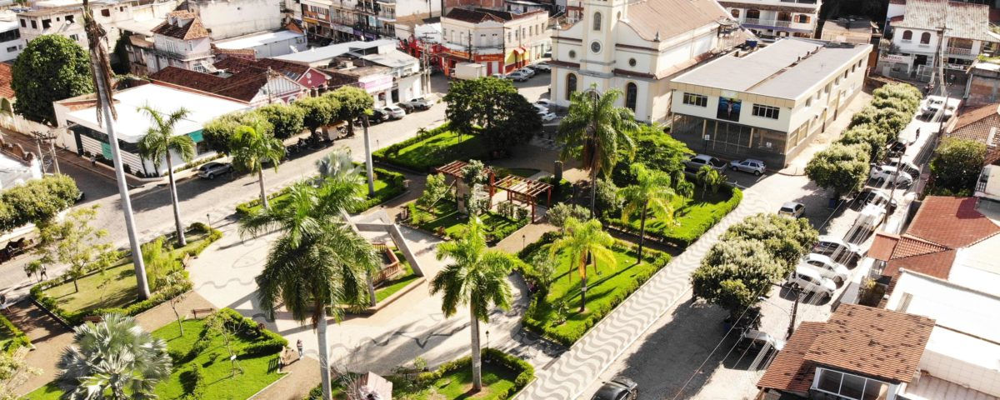
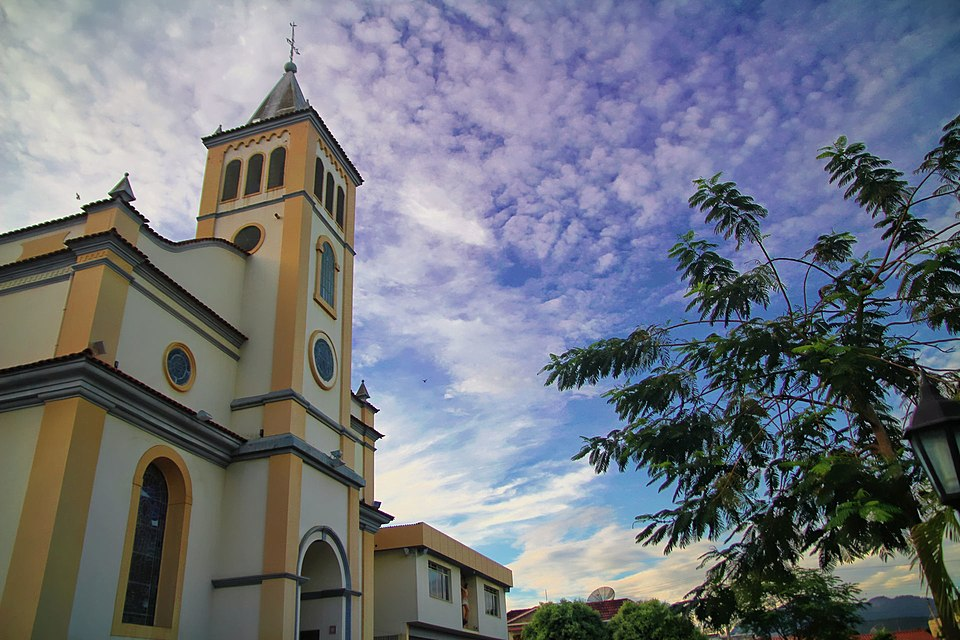
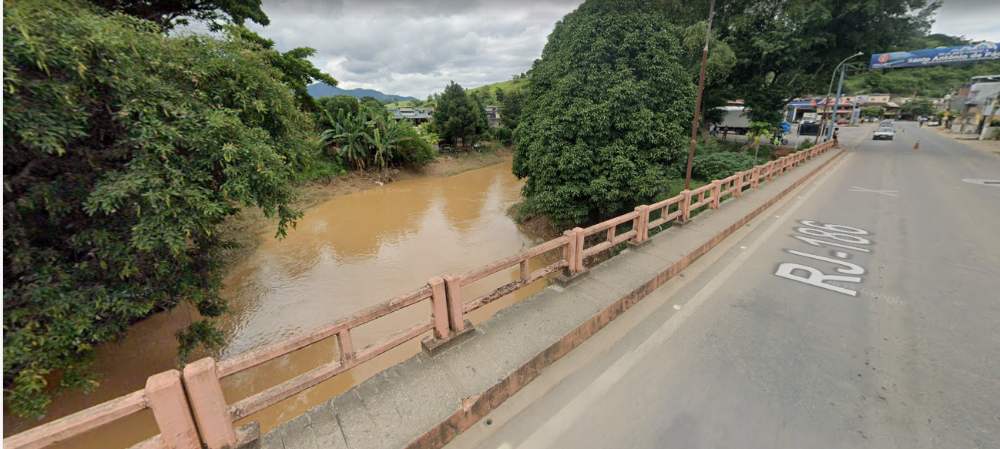
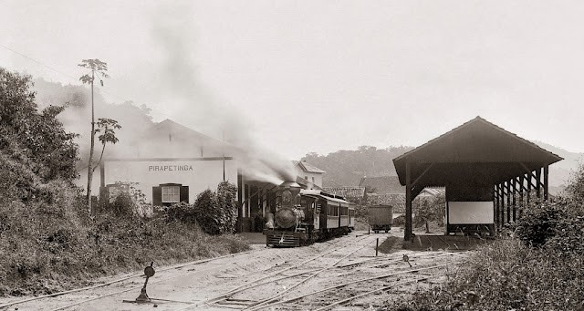

Descubra a rica história, arte e tradições da nossa cidade.
História e Patrimônio
Praça Sant'Ana: O Coração da Comunidade
A Praça Sant'Ana não é apenas um local de lazer, mas o centro histórico de Pirapetinga. Ligada diretamente à Igreja Matriz, ela é um patrimônio vivo que sedia eventos cívicos, religiosos e é o ponto de encontro da comunidade. Suas árvores centenárias e seu traçado preservam a memória da fundação da cidade.

Vista da Praça Sant'Ana, centro da vida social e histórica de Pirapetinga.
Igreja Matriz de Sant'Ana: Centro da Fé
Localizada ao lado da praça principal, a Igreja Matriz é um monumento de grande valor histórico e artístico. Sua construção marca um momento crucial do desenvolvimento de Pirapetinga e sua arquitetura é um belo exemplo do estilo religioso da época, sendo um ponto focal para a comunidade e um orgulho local.

Detalhe da arquitetura da Igreja Matriz, um marco do patrimônio da cidade.
A Ponte sobre o Rio Pirapetinga: Símbolo de Desenvolvimento
Construída no início do século XX, a Ponte de Ferro representa a chegada do progresso e o impulso da economia na região, estando historicamente ligada ao transporte ferroviário e à expansão da cidade. Ela é um marco da infraestrutura da época e um importante ponto visual da cidade.

A Ponte de Ferro, símbolo da conexão e do desenvolvimento de Pirapetinga.
Antiga Estação Ferroviária: O Portal do Progresso
A Estação Ferroviária de Pirapetinga é um marco do ciclo do café e do transporte no século XX. Ela foi o principal ponto de entrada e saída de mercadorias e pessoas, conectando a cidade ao Rio de Janeiro e a outras regiões. Hoje, o prédio remanescente é um valioso testemunho da história ferroviária, essencial para entender o desenvolvimento urbano e econômico local.

A Estação, um valioso testemunho da história ferroviária da cidade.